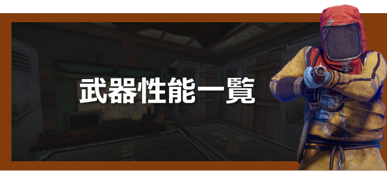
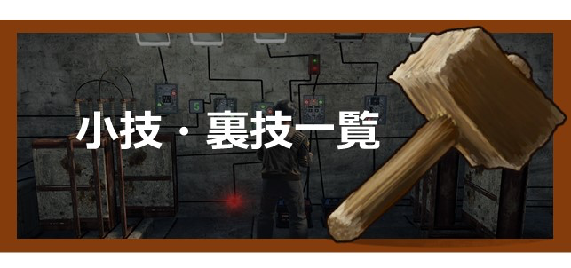
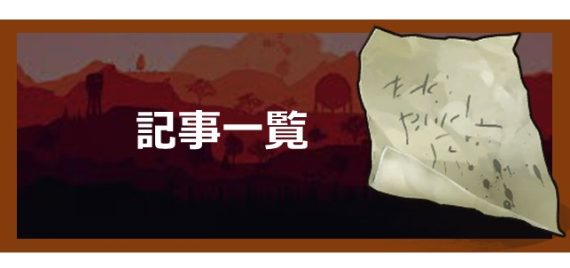

Rust Japan wiki【公式】へようこそ
Rust Japan wikiはFacepunch公認の攻略サイトになります。ゲーム内情報からアップデートの情報まで幅広く掲載しています。
現在トップページの編集中です。完成まで今しばらくお待ちください。
お役立ちまとめ


| 小技・裏技 | |
|---|---|
| 削岩機の使い方 | ロッカーで隠し扉 |
| 追加予定 | 追加予定 |
| 追加予定 | 追加予定 |
| 追加予定 | 追加予定 |

| 記事一覧 |
|---|
Rustとは？
RustはFacepunchスタジオによって作られたサバイバルゲームです。
マインクラフトや他のサバイバルゲームによく似ていますが、敵から身を守り生き延びることがRustでの目標です。
運が良ければ敵を倒し物を取ることが出来ますが、運が悪ければ倒され物を取られます。
生き延びるために仲間を作り協力することも可能です。Rustの世界は過酷であり、
次の日には家がなくなっていたりします。ですので仲間を作り強くて大きな拠点を作り敵から身を守りましょう。
よくある質問
- Q:Rust始めてなんだけどまず何したらいい？
- A:初心者へ行って序盤のチュートリアルを学びましょう！
- Q:ps4版はコミュニティーサーバーないの？
- A:現在はありませんが今後実装される予定です。
- Q:馬に乗れないんだけど
- A:現在のバージョンでは馬に乗ることは不可能です。こちらもアップデートで乗れるようになるみたいです
- Q:ソロだけど問題ない？
- A:ソロだと厳しいですが十分楽しめます。ただ戦闘に勝ちたいなら複数人でやってください
- Q:最強武器最強装備教えて！
- A:ガチ装備と呼ばれる装備が存在します。